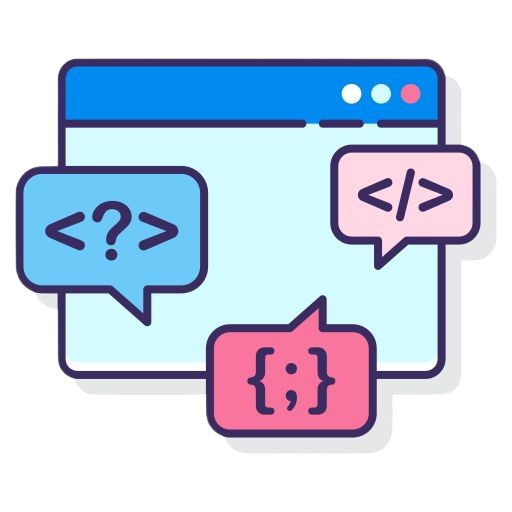

Hi there

I am
Professional Software Engineer
A software engineer based in Nairobi, Kenya that designs, develops, and maintains software systems, solving technical challenges through coding, testing, and collaboration to create efficient applications for diverse industries and clients
